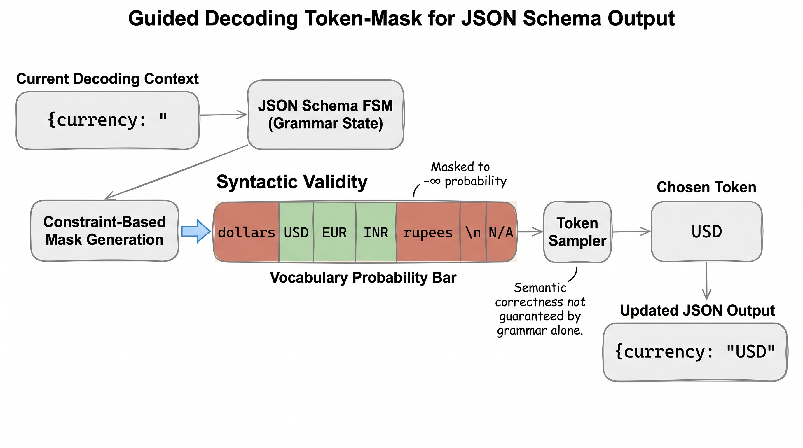
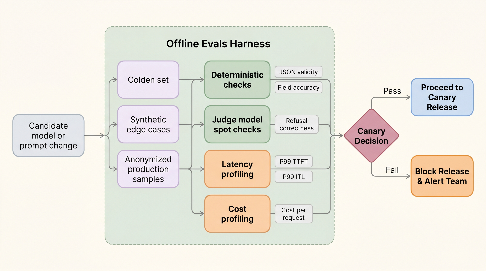

Reliability starts at the token boundary.
Production inference is not complete when the model emits fluent text. Applications need contracts: valid JSON, safe tool calls, stable fields, measured quality, bounded latency, and release gates that catch regressions before users do.
Structured output is an API contract, not a formatting preference.
If a model is powering a workflow, the downstream system does not consume "nice prose." It consumes values. An invoice agent needs a number for total. A browser agent needs a tool name and typed arguments. A support automation needs a category enum. A database-writing agent needs validated fields.
Prompt-only contract
System:
Return JSON with invoice_id, total, currency.
Model:
Sure, here is the JSON:
{
invoice_id: INV-42,
total: "about twelve hundred",
currency: "dollars"
}
Schema contract
{
"type": "object",
"required": ["invoice_id", "total", "currency"],
"properties": {
"invoice_id": {"type": "string"},
"total": {"type": "number"},
"currency": {"enum": ["USD", "EUR", "INR"]}
}
}
| Layer | Guarantee | Does not guarantee |
|---|---|---|
| Prompt instruction | Model is nudged toward a format | validity or consistency |
| JSON parser | output is parseable JSON | schema or semantic correctness |
| JSON schema | types, required fields, enums | the values are true |
| Business rules | domain constraints | full task correctness |
| Eval harness | measured behavior across examples | perfect future behavior |
Guided decoding turns a schema into a token mask.
The model still produces logits for every token in the vocabulary. Guided decoding changes the sampler. At each step, a grammar, regex, JSON schema, or finite-state machine says which tokens can legally come next. Illegal tokens are masked before sampling.

PaperBanana figure: schema/FSM constraints flow into the sampler as a token mask.
Hand walkthrough: currency enum
Partial output: {"currency": ". The model's raw logits might prefer "dollars" because it is natural English. The schema says only three values are legal.
| Method | Mechanism | Best use | Trade-off |
|---|---|---|---|
| Logit biasing | Add or subtract score from selected tokens | preference steering | soft, not guaranteed |
| JSON mode | bias or constrain toward valid JSON | generic JSON responses | may not enforce exact schema |
| Grammar-guided decoding | FSM/parser masks invalid tokens | strict formats, SQL-like grammars, tool args | sampler overhead and implementation complexity |
| Constrained beam/search | search only valid continuations | small output spaces | can be slower than sampling |
Retries and repair loops are useful, but they can hide bad systems.
A repair loop asks the model to fix malformed output. It can rescue occasional failures, but if repair rate becomes normal, your product is paying for a second model call and hiding a regression.
if parse_fails: repair_once_with_small_model() elif schema_fails: repair_once_with_error_message() elif semantic_check_fails: route_to_stronger_model_or_human_review() else: return result emit metrics: parse_failure_rate schema_failure_rate repair_rate repair_success_rate added_latency_ms
An eval harness is CI for model behavior.
Unit tests say the code runs. Evals say the model still behaves. For structured output, the harness must test both machine validity and task correctness.

PaperBanana figure: a release gate combines deterministic checks, judge checks, latency profile, and cost profile.
Minimal eval record
id: invoice_042 input: "raw OCR text from invoice..." expected: invoice_id: INV-2026-042 total: 1287.50 currency: USD risk_flags: ["late_fee"] checks: parse_json: true schema_valid: true exact.invoice_id: true numeric.total.abs_error <= 0.01 enum.currency: true contains.risk_flags: late_fee p99_latency_ms <= 1200 cost_per_1000_requests <= budget
Golden set
Small, reviewed examples that represent the product's contract. This is where exact field-level checks belong.
Synthetic edge set
Generated adversarial variants: missing fields, weird dates, long contexts, multilingual text, malformed tables.
Production replay
Anonymized traffic samples. This catches distribution drift that handcrafted tests miss.
| Metric | Definition | Why it matters |
|---|---|---|
| JSON validity | parseable JSON / total outputs | application cannot consume malformed output |
| Schema validity | schema-valid outputs / parseable outputs | types and required fields hold |
| Field accuracy | correct fields / expected fields | business correctness |
| Repair rate | outputs needing repair / total outputs | hidden cost and reliability signal |
| Refusal correctness | correctly refused or complied / policy examples | safety and helpfulness balance |
| Latency profile | P50/P90/P99 by stage | prevents quality from destroying SLO |
LLM judges are useful only when boxed in.
Judge models can grade semantics when exact checks are impossible, but they are not magic truth machines. They need rubrics, calibration, disagreement handling, and spot checks.
Bad judge prompt
Is this answer good? Return yes or no.
This is vague. It will drift, over-reward verbosity, and fail to expose which behavior regressed.
Better judge rubric
Grade from 0-2 for each: 1. all required fields present 2. values supported by source text 3. no unsupported risk flags 4. no unsafe advice Return JSON with scores and evidence spans.
The judge output is itself structured and auditable.
Benchmark the whole structured-output system.
Structured output changes latency. Guided decoding can slow sampling. Validation adds post-processing. Repair adds extra calls. Benchmark the full pipeline, not just model tokens/sec.
| Benchmark slice | Question |
|---|---|
| no constraints | baseline quality and latency |
| JSON schema / guided decoding | validity gain versus sampler overhead |
| schema + validators | end-to-end app contract |
| schema + repair | tail latency and hidden cost |
| candidate model versus baseline | release decision |
The release gate ties quality to production.
release_gate(candidate): require json_validity >= 99.9% require schema_validity >= 99.5% require field_accuracy >= baseline - 0.5% require refusal_correctness >= baseline require repair_rate <= baseline + 1% require p99_ttft <= baseline * 1.10 require p99_total_latency <= baseline * 1.15 require cost_per_request <= baseline * 1.15 require canary_rollback_ready == true
The lesson
Structured output and evals belong in inference engineering because they change how decoding runs, how latency is measured, how deployments are gated, and how failures are debugged. A fast model that returns invalid tool calls is not a production system.